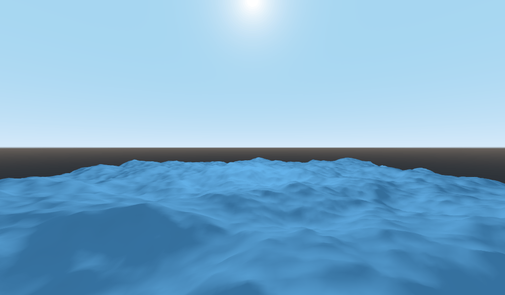
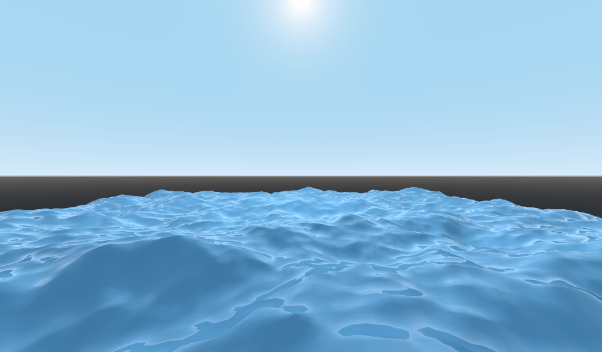
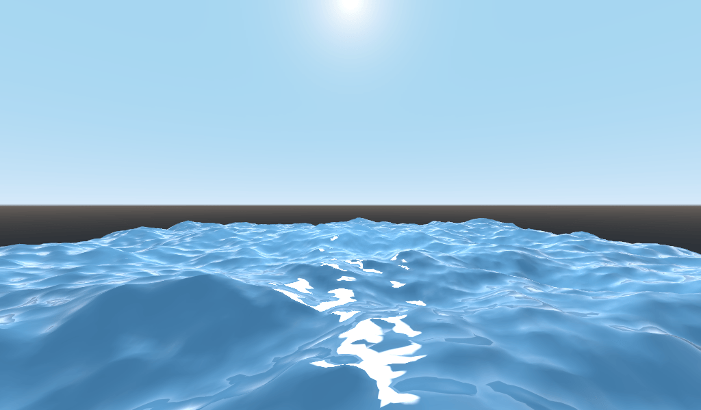
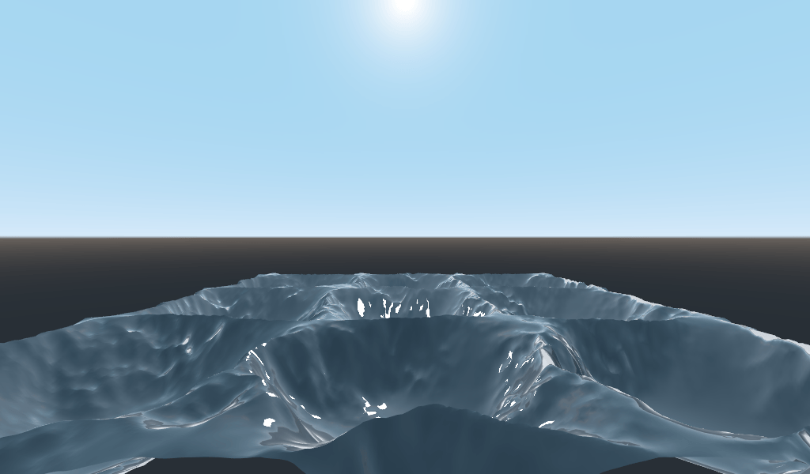
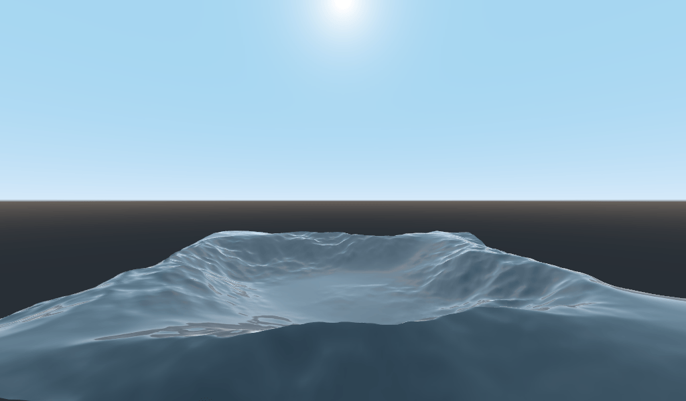

Your second 3D shader
From a high-level, what Godot does is give the user a bunch of parameters that
can be optionally set (AO, SSS_Strength, RIM, etc.). These
parameters correspond to different complex effects (Ambient Occlusion,
SubSurface Scattering, Rim Lighting, etc.). When not written to, the code is
thrown out before it is compiled and so the shader does not incur the cost of
the extra feature. This makes it easy for users to have complex PBR-correct
shading, without writing complex shaders. Of course, Godot also allows you to
ignore all these parameters and write a fully customized shader.
For a full list of these parameters see the spatial shader reference doc.
A difference between the vertex function and a fragment function is that the
vertex function runs per vertex and sets properties such as VERTEX
(position) and NORMAL, while the fragment shader runs per pixel and, most
importantly, sets the ALBEDO color of the MeshInstance3D.
Your first spatial fragment function
As mentioned in the previous part of this tutorial. The standard use of the
fragment function in Godot is to set up different material properties and let
Godot handle the rest. In order to provide even more flexibility, Godot also
provides things called render modes. Render modes are set at the top of the
shader, directly below shader_type, and they specify what sort of
functionality you want the built-in aspects of the shader to have.
For example, if you do not want to have lights affect an object, set the render
mode to unshaded:
render_mode unshaded;
You can also stack multiple render modes together. For example, if you want to use toon shading instead of more-realistic PBR shading, set the diffuse mode and specular mode to toon:
render_mode diffuse_toon, specular_toon;
This model of built-in functionality allows you to write complex custom shaders by changing only a few parameters.
For a full list of render modes see the Spatial shader reference.
In this part of the tutorial, we will walk through how to take the bumpy terrain from the previous part and turn it into an ocean.
First let's set the color of the water. We do that by setting ALBEDO.
ALBEDO is a vec3 that contains the color of the object.
Let's set it to a nice shade of blue.
void fragment() {
ALBEDO = vec3(0.1, 0.3, 0.5);
}

We set it to a very dark shade of blue because most of the blueness of the water will come from reflections from the sky.
The PBR model that Godot uses relies on two main parameters: METALLIC and
ROUGHNESS.
ROUGHNESS specifies how smooth/rough the surface of a material is. A low
ROUGHNESS will make a material appear like a shiny plastic, while a high
roughness makes the material appear more solid in color.
METALLIC specifies how much like a metal the object is. It is better set
close to 0 or 1. Think of METALLIC as changing the balance between
the reflection and the ALBEDO color. A high METALLIC almost ignores
ALBEDO altogether, and looks like a mirror of the sky. While a low
METALLIC has a more equal representation of sky color and ALBEDO color.
ROUGHNESS increases from 0 to 1 from left to right while
METALLIC increase from 0 to 1 from top to bottom.

Note
METALLIC should be close to 0 or 1 for proper PBR shading.
Only set it between them for blending between materials.
Water is not a metal, so we will set its METALLIC property to 0.0. Water
is also highly reflective, so we will set its ROUGHNESS property to be quite
low as well.
void fragment() {
METALLIC = 0.0;
ROUGHNESS = 0.01;
ALBEDO = vec3(0.1, 0.3, 0.5);
}

Now we have a smooth plastic looking surface. It is time to think about some particular properties of water that we want to emulate. There are two main ones that will take this from a weird plastic surface to nice stylized water. The first is specular reflections. Specular reflections are those bright spots you see from where the sun reflects directly into your eye. The second is fresnel reflectance. Fresnel reflectance is the property of objects to become more reflective at shallow angles. It is the reason why you can see into water below you, but farther away it reflects the sky.
In order to increase the specular reflections, we will do two things. First, we will change the render mode for specular to toon because the toon render mode has larger specular highlights.
render_mode specular_toon;

Second we will add rim lighting. Rim lighting increases the effect of light at glancing angles. Usually it is used to emulate the way light passes through fabric on the edges of an object, but we will use it here to help achieve a nice watery effect.
void fragment() {
RIM = 0.2;
METALLIC = 0.0;
ROUGHNESS = 0.01;
ALBEDO = vec3(0.1, 0.3, 0.5);
}

In order to add fresnel reflectance, we will compute a fresnel term in our
fragment shader. Here, we aren't going to use a real fresnel term for
performance reasons. Instead, we'll approximate it using the dot product of the
NORMAL and VIEW vectors. The NORMAL vector points away from the
mesh's surface, while the VIEW vector is the direction between your eye and
that point on the surface. The dot product between them is a handy way to tell
when you are looking at the surface head-on or at a glancing angle.
float fresnel = sqrt(1.0 - dot(NORMAL, VIEW));
And mix it into both ROUGHNESS and ALBEDO. This is the benefit of
ShaderMaterials over StandardMaterial3Ds. With StandardMaterial3D, we could set
these properties with a texture, or to a flat number. But with shaders we can
set them based on any mathematical function that we can dream up.
void fragment() {
float fresnel = sqrt(1.0 - dot(NORMAL, VIEW));
RIM = 0.2;
METALLIC = 0.0;
ROUGHNESS = 0.01 * (1.0 - fresnel);
ALBEDO = vec3(0.1, 0.3, 0.5) + (0.1 * fresnel);
}

And now, with only 5 lines of code, you can have complex looking water. Now that
we have lighting, this water is looking too bright. Let's darken it. This is
done easily by decreasing the values of the vec3 we pass into ALBEDO.
Let's set them to vec3(0.01, 0.03, 0.05).

Animating with TIME
Going back to the vertex function, we can animate the waves using the built-in
variable TIME.
TIME is a built-in variable that is accessible from the vertex and fragment
functions.
In the last tutorial we calculated height by reading from a heightmap. For this
tutorial, we will do the same. Put the heightmap code in a function called
height().
float height(vec2 position) {
return texture(noise, position / 10.0).x; // Scaling factor is based on mesh size (this PlaneMesh is 10×10).
}
In order to use TIME in the height() function, we need to pass it in.
float height(vec2 position, float time) {
}
And make sure to correctly pass it in inside the vertex function.
void vertex() {
vec2 pos = VERTEX.xz;
float k = height(pos, TIME);
VERTEX.y = k;
}
Instead of using a normalmap to calculate normals. We are going to compute them
manually in the vertex() function. To do so use the following line of code.
NORMAL = normalize(vec3(k - height(pos + vec2(0.1, 0.0), TIME), 0.1, k - height(pos + vec2(0.0, 0.1), TIME)));
We need to compute NORMAL manually because in the next section we will be
using math to create complex-looking waves.
Now, we are going to make the height() function a little more complicated by
offsetting position by the cosine of TIME.
float height(vec2 position, float time) {
vec2 offset = 0.01 * cos(position + time);
return texture(noise, (position / 10.0) - offset).x;
}
This results in waves that move slowly, but not in a very natural way. The next section will dig deeper into using shaders to create more complex effects, in this case realistic waves, by adding a few more mathematical functions.
Advanced effects: waves
What makes shaders so powerful is that you can achieve complex effects by using
math. To illustrate this, we are going to take our waves to the next level by
modifying the height() function and by introducing a new function called
wave().
wave() has one parameter, position, which is the same as it is in
height().
We are going to call wave() multiple times in height() in order to fake
the way waves look.
float wave(vec2 position){
position += texture(noise, position / 10.0).x * 2.0 - 1.0;
vec2 wv = 1.0 - abs(sin(position));
return pow(1.0 - pow(wv.x * wv.y, 0.65), 4.0);
}
At first this looks complicated. So let's go through it line-by-line.
position += texture(noise, position / 10.0).x * 2.0 - 1.0;
Offset the position by the noise texture. This will make the waves curve, so
they won't be straight lines completely aligned with the grid.
vec2 wv = 1.0 - abs(sin(position));
Define a wave-like function using sin() and position. Normally sin()
waves are very round. We use abs() to absolute to give them a sharp ridge
and constrain them to the 0-1 range. And then we subtract it from 1.0 to put
the peak on top.
return pow(1.0 - pow(wv.x * wv.y, 0.65), 4.0);
Multiply the x-directional wave by the y-directional wave and raise it to a
power to sharpen the peaks. Then subtract that from 1.0 so that the ridges
become peaks and raise that to a power to sharpen the ridges.
We can now replace the contents of our height() function with wave().
float height(vec2 position, float time) {
float h = wave(position);
return h;
}
Using this, you get:

The shape of the sin wave is too obvious. So let's spread the waves out a bit.
We do this by scaling position.
float height(vec2 position, float time) {
float h = wave(position * 0.4);
return h;
}
Now it looks much better.

We can do even better if we layer multiple waves on top of each other at varying frequencies and amplitudes. What this means is that we are going to scale position for each one to make the waves thinner or wider (frequency). And we are going to multiply the output of the wave to make them shorter or taller (amplitude).
Here is an example for how you could layer the four waves to achieve nicer looking waves.
float height(vec2 position, float time) {
float d = wave((position + time) * 0.4) * 0.3;
d += wave((position - time) * 0.3) * 0.3;
d += wave((position + time) * 0.5) * 0.2;
d += wave((position - time) * 0.6) * 0.2;
return d;
}
Note that we add time to two and subtract it from the other two. This makes the
waves move in different directions creating a complex effect. Also note that the
amplitudes (the number the result is multiplied by) all add up to 1.0. This
keeps the wave in the 0-1 range.
With this code you should end up with more complex looking waves and all you had to do was add a bit of math!

For more information about Spatial shaders read the Shading Language doc and the Spatial Shaders doc. Also look at more advanced tutorials in the Shading section and the 3D sections.